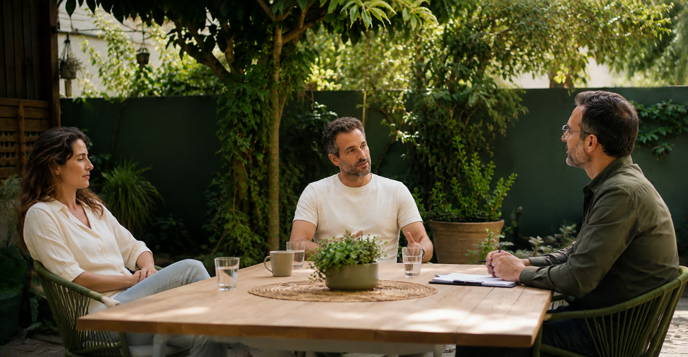

זוגיות טובה היא לא מזל - היא מיומנות שאפשר ללמוד, בכל שלב של הקשר. אני מלווה זוגות ויחידים בדרך לקשר בריא, קרוב ומדבר.
רגע לפני החתונה, אחרי שנים של שחיקה, או כשהקשר כבר כואב. בעזרת כלים מעשיים ועבודה על דפוסי התקשורת - אפשר להחזיר את הקרבה.
מפגשים זוגיים שבהם לומדים להקשיב באמת, לזהות את הדפוס הזוגי שחוזר על עצמו ולשבור אותו יחד. מתאים לזוגות בכל שלב - נשואים, ידועים בציבור או בתחילת הדרך - שרוצים להפסיק להסתובב במעגלים ולהתחיל להתקדם.
רגע לפני החתונה צצים פחדים, ספקות וויכוחים? זה טבעי - וזה בדיוק הזמן לטפל בזה. ליווי ממוקד לזוגות לפני נישואין, שעוזר לפרק את הקשיים עכשיו במקום לגרור אותם אל תוך החיים המשותפים.
כשכל שיחה הופכת לוויכוח וכבר לא באמת מקשיבים זה לזה - הקשר נשחק. נלמד יחד תקשורת מקרבת: איך אומרים את האמת בלי לפצוע, איך מבקשים בלי להאשים, ואיך הופכים מריבות לשיחות שמקרבות.
הרבה ביקורת, האשמות, שליטה ומעט מאוד הערכה - זוגיות רעילה מתישה את הנפש. נזהה יחד את הדינמיקה הפוגעת, נציב גבולות בריאים ונבדוק באומץ מה אפשר לרפא ואיך בונים קשר בטוח יותר.
רוצים קשר אמיתי אבל זה פשוט לא קורה? לפעמים הדפוס שעוצר אותנו נמצא אצלנו - אמונות, פחדים ובחירות שחוזרות על עצמן. נעבוד על מה שמרחיק אתכם מקשר, כדי שהזוגיות הבאה תהיה גם הנכונה.
הנהנתם לפחות פעם אחת? שווה לדבר. שיחת היכרות לא מחייבת בכלום - והיא כבר צעד ראשון שעושים יחד.
שיחה אישית וללא התחייבות - מספרים מה כואב, מבינים איך התהליך עובד ובודקים שיש חיבור.
מזהים יחד את הדפוס הזוגי: מי מתקרב, מי מתרחק, ואיפה בדיוק השיחות נתקעות.
מפגשים זוגיים עם כלים מעשיים מעולם ה-NLP והתקשורת המקרבת - ותרגול אמיתי בבית, בין המפגשים.
לא רק מכבים שריפות - בונים שפה זוגית חדשה שנשארת איתכם הרבה אחרי סיום התהליך.
בהחלט. כשאחד מבני הזוג משתנה - הדינמיקה כולה משתנה, ולא פעם דווקא התהליך האישי פותח את הדלת לעבודה משותפת בהמשך. גם מי שעדיין מחפש זוגיות מוזמן לתהליך אישי ממוקד.
להפך. זוגות שמגיעים לטיפול הם זוגות שאכפת להם - שבחרו להילחם על הקשר במקום לוותר עליו. ברוב המקרים, ככל שמגיעים מוקדם יותר, הדרך חזרה לקרבה קצרה יותר.
בדרך כלל כן - הלב של התהליך הוא המפגשים הזוגיים. לפי הצורך משולבים גם מפגשים אישיים לכל אחד מבני הזוג, כדי לתת מקום למה שקשה להגיד בנוכחות השני.
מאוד. ליווי טרום נישואין הוא אחד התהליכים המשמעותיים ביותר - מטפלים בפחדים, בספקות ובוויכוחים עכשיו, במקום לגרור אותם אל תוך החיים המשותפים. גם זוגות בתחילת הדרך מוזמנים.
תלוי בכם ובמטרה. יש מסלולים ממוקדים של מספר מפגשים סביב נושא אחד, ויש תהליכי עומק ארוכים יותר. בשיחת ההיכרות מגדירים יחד ציפיות - בלי לחץ ובלי התחייבות.
כן. המפגשים מתקיימים בקליניקה ברחובות (דובנוב 51), וזוגות שגרים רחוק נפגשים בזום - באותה רמת עומק ואיכות.
למען הסר ספק: הליווי והטיפול הרגשי אצל אלון שמש אינם מחליפים טיפול פסיכולוגי או פסיכיאטרי. אלון אינו פסיכולוג ואינו פסיכיאטר, ויש מצבים שמצריכים אבחון או טיפול של איש מקצוע מתחום בריאות הנפש - במקרים כאלה תקבלו הפניה לגורם המתאים.
אצל רוב הזוגות הצעד הקשה הוא הראשון. שיחת היכרות אישית, בלי התחייבות - ומשם ממשיכים ביחד.